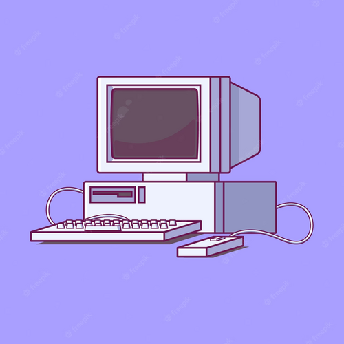
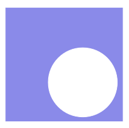
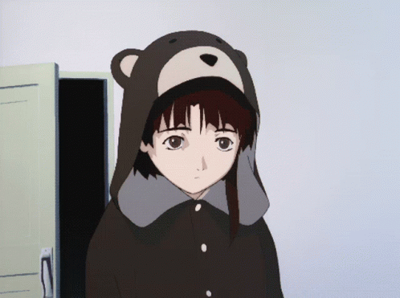

Разработка страниц с сегментированной графикой, анимированной графикой и мультимедиа
Задание:Добавить на одну из страниц карту изображений с несколькими ссылками, используя теги map и area.
Добавить на одну из страниц карту изображений, содержащую области, показанные в задании в п.3.1.
Реализовать дубликат карты изображения с применением CSS и без применения тегов map и area.
Разработать и включить на одну из созданных ранее страниц gif-анимацию.
Включить на страницу звуковой файл.
Включить на страницу видеоролик.